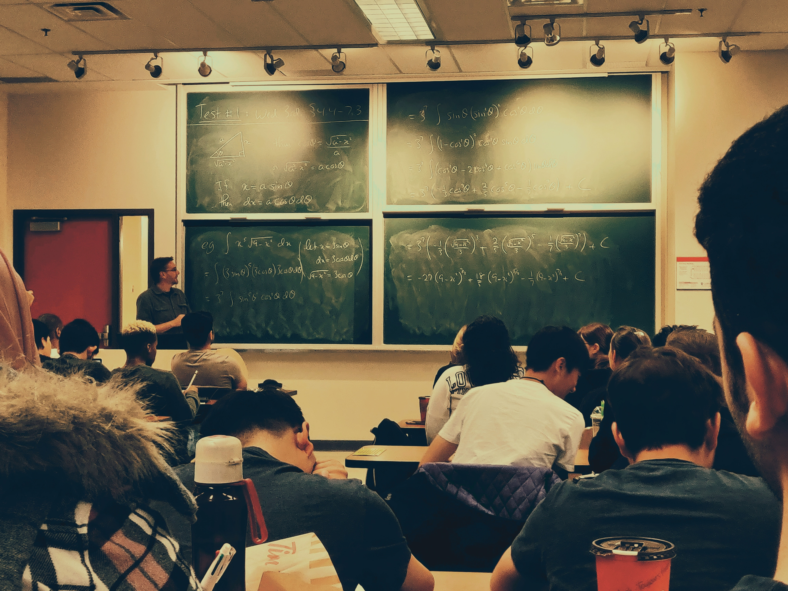

Bienvenidos a nuestra Untref School, donde los sueños y la educación se unen para formar un mundo extraordinario. Somos mucho más que una institución educativa; somos un refugio para la creatividad, la innovación y el crecimiento personal.
Nuestra Misión: Inspirar y Formar Líderes del Futuro En nuestra Escuela Imaginaria, creemos que cada niño y adolescente tiene un potencial infinito esperando ser descubierto. Nuestro propósito es nutrir ese potencial, fomentando una educación holística que abarque tanto el desarrollo académico como el emocional.
.Excelencia Académica: Nos enorgullecemos de ofrecer un programa académico riguroso y completo, diseñado para desafiar e inspirar a nuestros estudiantes. Nuestros profesores altamente capacitados son apasionados por la enseñanza y están comprometidos a brindar una educación de calidad, apoyando el aprendizaje individualizado de cada estudiante.
Elige nuestra escuela porque somos más que un lugar de aprendizaje. Somos una comunidad que nutre la imaginación y despierta la curiosidad. Aquí, cada estudiante es valorado y empoderado para descubrir su propio potencial y desarrollar sus talentos únicos. Nuestro enfoque educativo innovador combina lo académico con lo creativo, preparando a nuestros alumnos para enfrentar los desafíos del futuro. Fomentamos el pensamiento crítico y la resolución de problemas, inspirando a los estudiantes a explorar nuevas ideas y a ver el mundo desde diferentes perspectivas. Contamos con un equipo de docentes apasionados que se dedican a guiar y motivar a los estudiantes en su trayecto educativo. Nuestra escuela ofrece un ambiente seguro y acogedor donde cada niño puede crecer en confianza y superar sus metas. Además, nos enorgullecemos de nuestras instalaciones modernas y recursos tecnológicos de vanguardia, proporcionando un entorno propicio para el aprendizaje significativo y enriquecedor. Si buscas una escuela que inspire, que despierte la imaginación y que promueva el desarrollo integral de tus hijos, entonces te invitamos a unirte a nuestra comunidad. Juntos, daremos vida a un futuro lleno de oportunidades y éxito para cada estudiante que pase por nuestras aulas.
Enfoque Pedagógico Innovador: Fomentamos el pensamiento crítico, la resolución de problemas y la creatividad para preparar a los estudiantes para los desafíos del siglo XXI.
Programas Académicos Personalizados: Reconocemos que cada estudiante es único y tiene diferentes habilidades y necesidades. Por eso, ofrecemos programas académicos personalizados que se adaptan a las fortalezas y aspiraciones de cada alumno, permitiéndoles alcanzar su máximo potencial.
Formación Integral: Nuestra escuela se compromete a desarrollar no solo el intelecto, sino también los valores, habilidades sociales y emocionales de nuestros estudiantes. Fomentamos el respeto, la empatía y la responsabilidad para que se conviertan en ciudadanos comprometidos y compasivos.
Arte y Cultura:Creemos en la importancia del arte y la cultura en el desarrollo de la creatividad y la expresión personal. Ofrecemos programas de arte, música, teatro y actividades culturales para que los estudiantes exploren y desarrollen sus talentos artísticos.
Nos complace anunciar que las matrículas para el próximo año académico ya están abiertas. ¡Ven y únete a nuestra comunidad educativa donde la imaginación y el aprendizaje se unen para crear un futuro brillante!
Nuestra escuela se enorgullece de brindar oportunidades únicas de aprendizaje. Hemos programado una serie de talleres y charlas con expertos en diversas disciplinas, para inspirar a nuestros estudiantes a explorar nuevos horizontes y descubrir sus pasiones.
Nuestros equipos deportivos han estado mostrando un desempeño excepcional en las competencias intercolegiales. Desde el baloncesto hasta el atletismo, nuestros estudiantes han demostrado habilidades impresionantes y un espíritu de equipo inquebrantable.